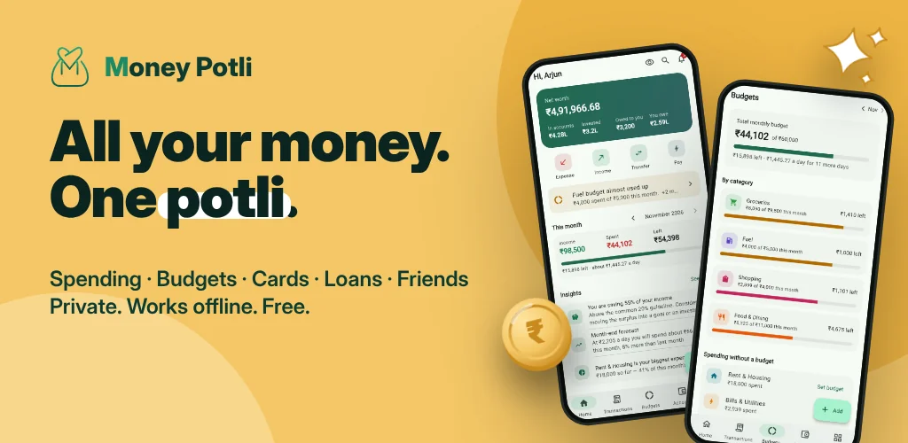
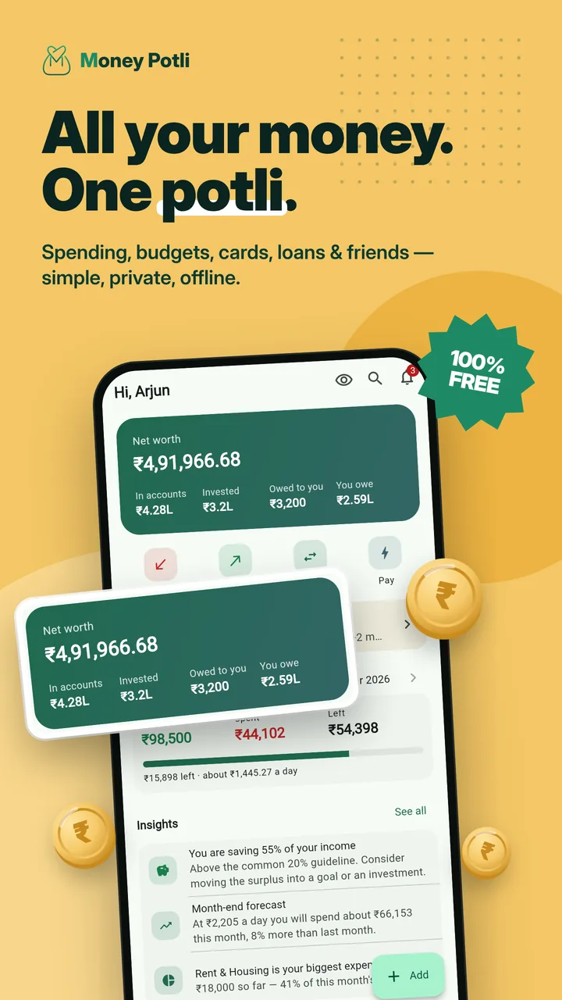
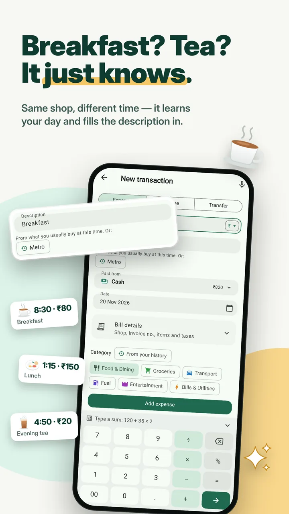
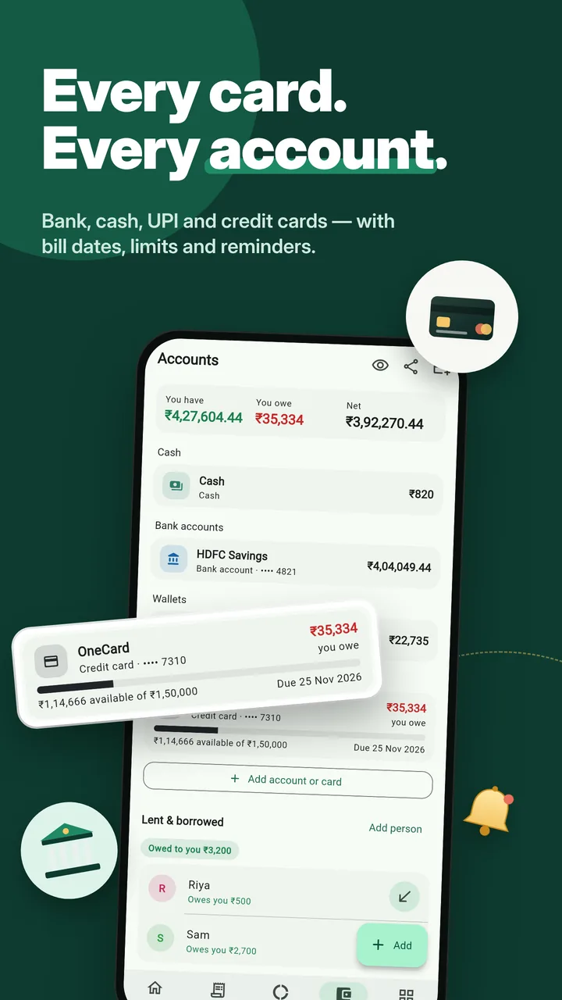
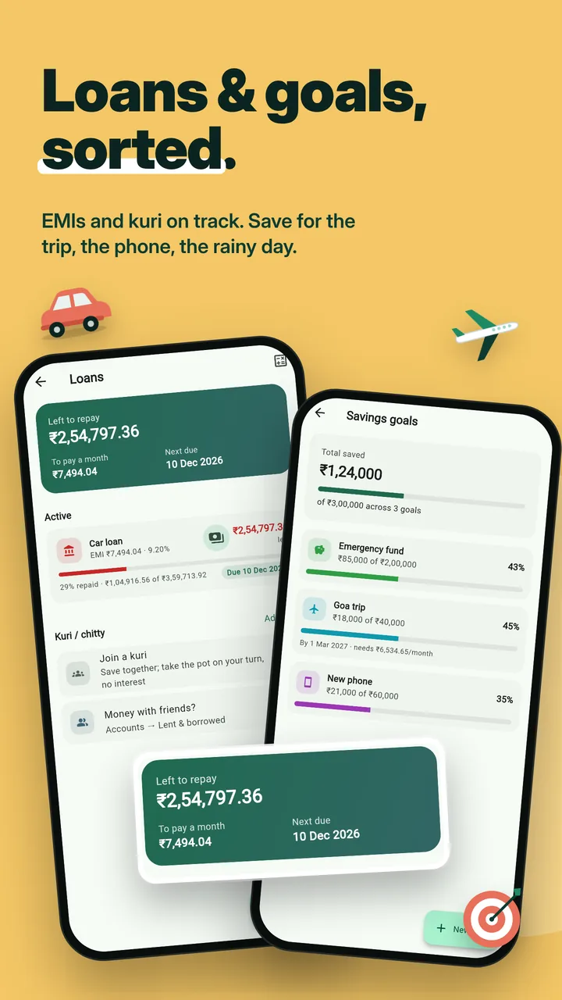
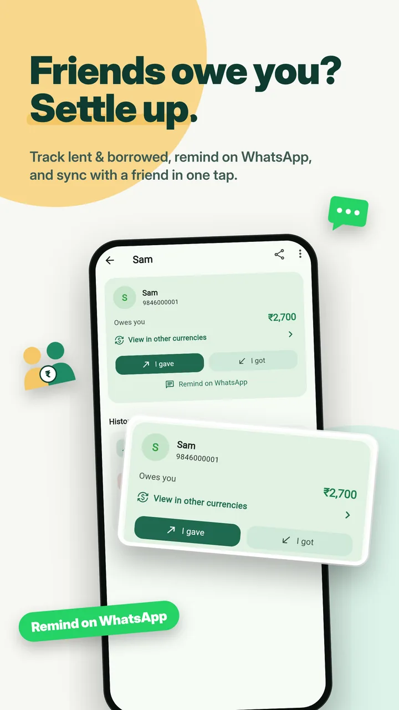
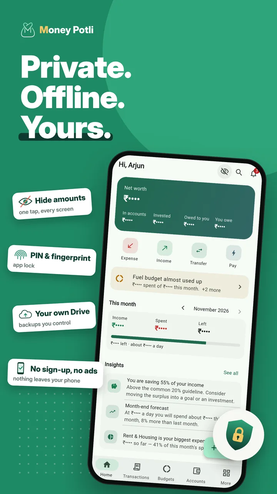

Money Potli
A private, offline-first money app for families in India and the Gulf. It started as a list of everyday frustrations and became a tested, launched product, built end to end by one engineer.

Start with what people actually struggle with
Before writing any code, I listed the real problems of the people I was building for: salaried families in Kerala and expats across the Gulf, who earn in one currency, spend in another, pay with cash, cards and UPI, lend to friends, and run kuris and EMIs.
Every feature in the app traces back to one of these requirements.
- Typing every expense is tedious, so I stop after a week.
- I earn in dirhams and spend in rupees. Apps get this wrong.
- I don't want my money data on someone's server.
- I've lost years of records to a phone change before.
- Friends, kuri, EMIs, cards — real life isn't just "expenses".
- It has to stay fast after years of entries.
How each need became a feature
Product decisions on the left, the engineering that makes them dependable on the right.
Entering expenses must be effortless
Bank SMS import in one tap, voice entry ("spent 250 on groceries"), bill scanning with the camera, and descriptions that learn your habits by shop, time of day and price.
A TensorFlow Lite category model (~400 KB) runs on the phone, with TensorFlow.js on the web and a built-in fallback interpreter. Suggestions went from 654 ms to 49 ms after indexing past entries.
Work across India and the Gulf
Accounts, loans and holdings in their own currencies; foreign spending shows the live rate, the bank's fee and GST/VAT; Gulf dinars keep their three decimals.
Rates from two public sources, cached offline with built-in fallbacks. Each entry stores its value in the main currency on the day, so history never shifts when rates move.
Private by default
No account, no server, no analytics. PIN and fingerprint lock, a one-tap privacy switch, and backups only to the user's own Google Drive.
PIN hashed with salted PBKDF2 in the Android Keystore, screenshots blocked while locked, friend sync files encrypted with AES-256-GCM, Drive limited to a hidden app folder.
Never lose a record
Scheduled Drive backups, weekly on-device snapshots, and an automatic safety copy before every restore or erase.
Schema versioning with migrations, all-or-nothing restores, checksummed compressed backups that older versions still read, validated by a 3-year day-by-day simulation.
Model real-life money
Lent & borrowed with WhatsApp reminders, kuris, EMIs with amortisation, credit cards with due dates, savings goals, budgets with daily limits, and investments with live prices.
Balances are always derived from transactions, never stored, so every screen agrees. Recurring entries are idempotent and keep their day across time-zone and clock changes.
Stay fast for years
Instant month views, search across all history, smooth scrolling, and a read-only dashboard for the computer served from the phone over Wi-Fi.
Month and search indexes built once per change, heavy work moved off the UI thread. Measured: 0 dropped frames scrolling 24,000 entries on a real Samsung phone.
Screens from the app








Architecture at a glance
Clear layers, so features can grow without breaking what already works.
Stack
- Release builds obfuscated and signed
- CSV exports protected against spreadsheet formula injection
- Security review documented, with known gaps and planned fixes
Tested like it handles real money
Because it does. Every release is checked on a real phone, with years of generated data.
Unit & widget tests
Finance maths, parsers, currency, backups, migrations and the ML tokenizer, run headless on every change.
On-device end-to-end cases
Every user flow driven on a Samsung Galaxy S20 FE; one device-only case skipped with a documented reason.
Issues caught before release
Found by the test suite and fixed, each linked to the test that now guards it.
| Measured on a real phone | 5 years, heavy use (23,863 entries) |
|---|---|
| Launch → dashboard drawn | 239 ms |
| Save a transaction → shown in the list | 16 ms |
| Category suggestion, 20 keystrokes | 49 ms (was 654 ms) |
| Scroll the transaction list | 0 dropped frames |
| Memory used by 5 years of data | 16 MB |
From idea to launch
The same steps I follow on client projects.
Requirements
Real user problems written down first, each one a testable need.
Design
Flows and screens shaped around the fastest way to get each job done.
Engineering
Layered architecture, local-first data and security built in from day one.
Testing
Unit, end-to-end and performance tests on real devices before every release.
Launch
Play Store listing, screenshots, short videos and social kit, all ready to go.
Have requirements that need a dependable product?
Whether it's an app, an ERP module or a workflow that's still on spreadsheets, I'll take it from your list of needs to tested software in production.